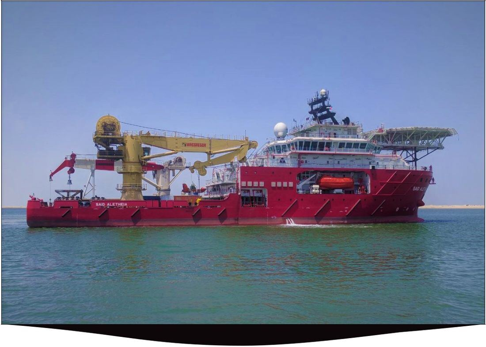
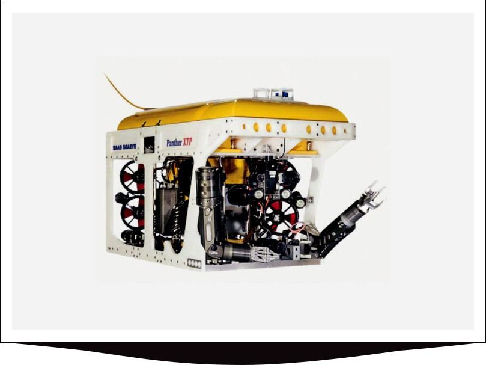
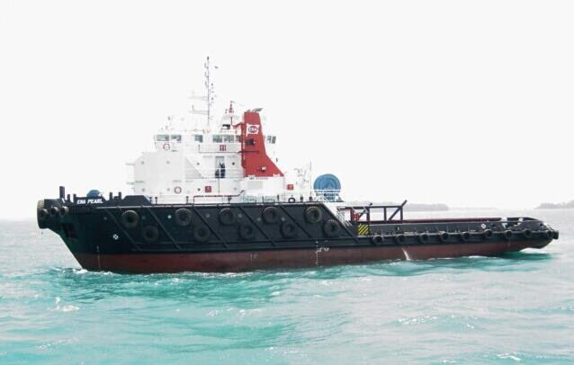
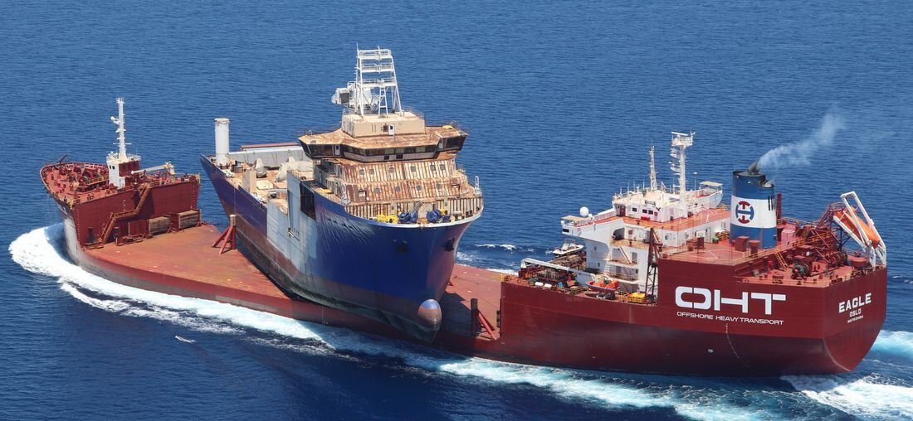
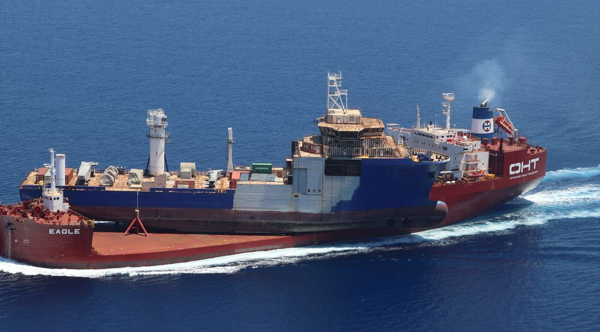
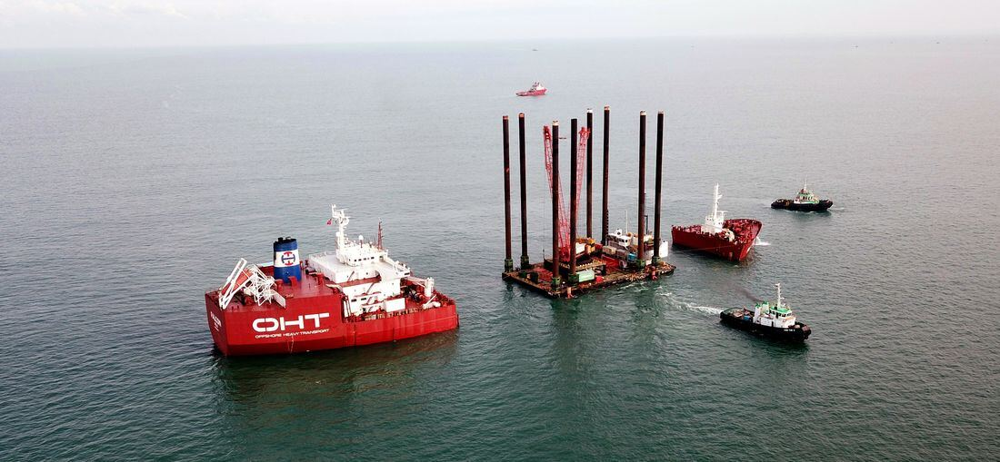
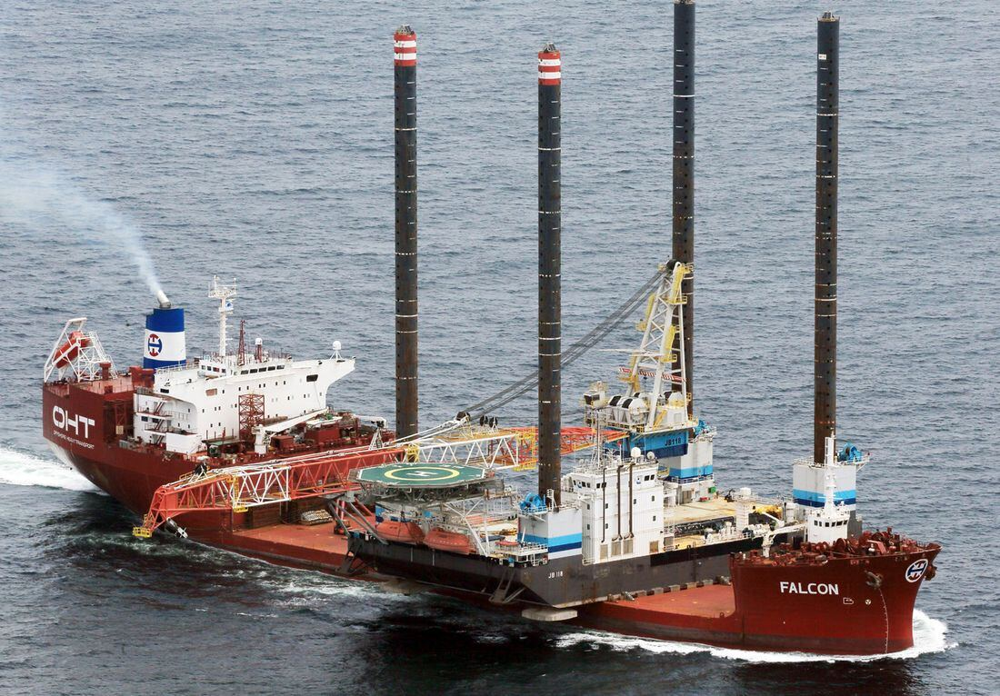
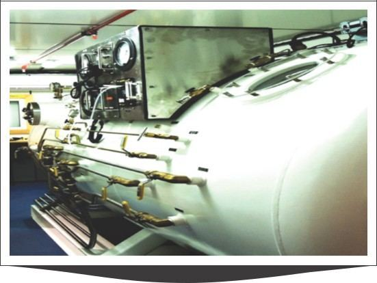

Sundance gives clients access to the marine and oilfield assets a project needs — offshore support vessels, dive support and ROV systems, diving spreads, semi-submersible heavy lift, jack-ups, and heavy transport equipment — sourced, certified and supervised across West Africa.
The classes below set out what we cover. Each has a representative specification sheet you can download; exact availability and certification are confirmed at inquiry stage.
Dive Support Vessels
Three classes of dive support and construction vessel, from mid-size air/saturation platforms to full ice-class tonnage, covering subsea inspection, repair and installation work down to 300 meters.

300m Saturation DSV — DPS-2 Construction Support
DPS-2
300m sat / 12-man
150t crane · 2,000m WD
149 POB
A DPS-2 diesel-electric construction and diving support vessel with a 12-man saturation system rated to 300 meters and a separate 50-meter air diving spread. The 150-tonne active-heave-compensated knuckle boom crane works to 2,000 meters water depth, and an 800 m² clear deck (10 t/m²) with helideck supports subsea installation, IRM and construction diving campaigns for up to 149 persons on board.
A DP-II multipurpose dive/ROV support vessel suited to survey, inspection and light-to-medium construction work. Its 75-tonne main crane (heave-compensated to 20 tonnes) and 650 m² clear deck work alongside a 12-man, three-chamber saturation system to 200 meters and a 50-meter air diving spread, with accommodation for 112 persons plus divers in saturation.
An ice-classed (Ice-1C), DP3 diving and construction support vessel built for higher-latitude and harsher-environment campaigns. A 400-tonne active-heave main crane (3,000 m single-fall working depth) and a 1,850 m² working deck (15 t/m²) are matched to a 24-man saturation system to 300 meters across two dedicated bell moonpools, plus a dedicated air/nitrox surface diving spread — supporting up to 200 persons on board.
Observation-class through heavy work-class ROV systems with full launch-and-recovery and tooling spreads, for drill support, pipeline survey, IRM and construction work.

Electric Work-Class ROV — 1,000m, Light Footprint
1,000m depth
150 kg payload
2 x Schilling manipulators
200m LARS umbilical
An electric work-class ROV rated to 1,000 meters, sized for projects where deck space is limited. Eight vectored 500V thrusters give speeds over 4 knots and a 150 kg payload, with dual Schilling Orion manipulators, a full sensor suite and a caged LARS on a 200-meter umbilical — suited to drill support, pipeline survey, salvage, cleaning and IRM.
A 1,000-meter work-class electric ROV with 205 kg payload and a 1-tonne through-frame lift capability. Dual Schilling Orion manipulators, station-keeping and cruise autopilots, and a full optional sensor and tooling package (multibeam, DVL, cutters) support drill support, pipeline survey, salvage and deep-water IRM.
The 2,000-meter variant of the same work-class platform, offering the same 205 kg payload, dual manipulators and tooling flexibility, with an extended-depth umbilical and TMS for projects working beyond standard work-class ROV depth limits.
A hydraulic heavy work-class ROV rated to 3,000 msw with a 350 kg payload — the largest in this range — powered by a 150 hp system and eight thrusters giving symmetrical thrust in all directions. Schilling Conan and PSSL TA60 manipulators and an 8-camera capacity suit it to heavier construction, IRM and tooling-intensive subsea work.
Anchor handling, rig towage and mooring support across bollard-pull classes, each carrying the deck and tank capacity to double as a supply vessel between moves.

87-Tonne Bollard Pull AHTS
87t bollard pull
200t towing winch
280m² deck
26 berths
An 87-tonne bollard pull anchor handling tug supply vessel with a 200-tonne double-drum towing winch and a 300-tonne stern roller, built for rig anchor handling, towage and mooring work. A 280 m² deck (7 t/m²) and 834 m³ fuel / 407 m³ fresh-water capacity let it also run supply and bulk-transfer duties between anchor-handling assignments.
Semi-submersible transport for the float-on/float-off, skid-on/skid-off and lift-on/lift-off movement of large offshore and onshore structures, including jack-up relocation.




Semi-Submersible Heavy Lift Vessel — 31,800 DWT
31,809 mt DWT
4,700 m² free deck
20 t/m² deck load
25,000 nm range
A semi-submersible heavy-lift transport vessel with 31,809 mt deadweight and a 4,700 m² free deck rated to 20 t/m². Submerging to 8.5 meters below deck for float-on/float-off work, it also handles skid-on/skid-off and roll-on/roll-off cargo, and is suited to jack-up rig relocation and large module transport over a 25,000 nm range.
Self-elevating platforms for offshore construction, workover and accommodation support in shallow-to-medium water depths.
Self-Elevating Liftboat — 65m Water Depth
65m max water depth
2 x 82.65t cranes
11,000 ft² deck
160 POB
A self-elevating liftboat working in up to 65 meters of water, with three 1,100 kW azimuth thrusters for self-propulsion and two LEC cranes rated to 82.65 tonnes. An 11,000 ft² deck and 810 mt variable load support platform construction, workover and maintenance campaigns, with accommodation for 160 persons including marine crew.
A larger self-elevating liftboat rated to 200 ft (61 m) water depth with 280 ft legs, carrying twin cranes of 189 and 200 short tons and an open deck of roughly 8,290 ft² (500 st deck loading). Fifty bunks and a rated helideck support extended offshore construction and maintenance campaigns.
A smaller three-legged jack-up barge working to 90 ft water depth (with 25 ft air gap), carrying a 70-tonne main crane and 2,500 ft² open deck. Twenty-nine berths and a moon pool suit it to platform maintenance, minor construction and support duties in shallower fields.
Platform supply tonnage for the routine movement of liquid mud, fuel, water, bulk cement and deck cargo between shore base and offshore installations.
DP2 Platform Supply Vessel — Methanol Capability
DP2 · FiFi-1
688 m² deck
Methanol transport
32 POB
A DP2, FiFi-1 platform supply vessel built for deep-water operations, with a 688 m² deck (51 x 13.5 m) and dedicated methanol transport capacity alongside standard liquid mud, fuel and dry bulk/cement handling. A moon pool is fitted for ROV operations, and accommodation is provided for 32 persons.
A DP2 multipurpose platform supply vessel with 920 m² total deck area across a main and mezzanine deck (10 t/m² cargo deck load) and a HiPAP-equipped DP reference suite. Prepared for two ROV systems and fitted with a 21-tonne main crane, it covers subsea IMR and survey support alongside conventional PSV cargo duties, with accommodation for 70.
Containerised diving spreads for mobilization aboard suitable vessels or platforms, covering air, mixed-gas and full saturation diving.

Air Diving System — 58m (190ft)
58m / 190ft depth
IMCA D018/D023/D040
20ft DDC
1t main winch
A modular air diving system rated to 58 meters (190 ft), compliant with IMCA D018, D023 and D040, comprising a 20 ft deck decompression chamber, LARS with a 1-tonne main winch, diving basket and HP compressor/air-bank container — built for inspection and light intervention work within air-diving depth limits.
A surface-supplied mixed-gas (helium-oxygen) diving spread built around a wet bell with acrylic dome, A-frame launch and recovery, and dedicated guide-wire and main-wire winch systems, designed to Lloyd's Rules. It extends diving capability beyond air-diving depth limits without the footprint of a full saturation spread.
A modular saturation diving system for depths to 180 meters, holding six divers in saturation for continuous back-to-back diving with its own two-man diving bell and A-frame launch and recovery. A dedicated Hyperbaric Rescue Chamber (8-person capacity) is included, and the ~196 m² footprint can be configured in-line, side-by-side or at right angles to suit deck layout.
Fast, secure transport for personnel and light cargo between shore base and offshore locations.
Fast Support / Crew Vessel — 20m Aluminum
28 pax + 2 crew
30 knots (loaded)
Ballistic-protected wheelhouse
SOLAS-compliant
A 20-meter aluminum fast support vessel (ABS +A1 HSC +AMS 'Crewboat') carrying 28 passengers and 2 crew at up to 30 knots fully loaded, powered by twin CAT C18 engines through Hamilton waterjets. A 10 m² cargo deck (1.5 mt capacity), full SOLAS life-saving equipment and wheelhouse ballistic protection to NIJ III / AK-47 threat level suit it to routine personnel transfer and light cargo runs.
Land-side and quayside logistics equipment supporting load-out, transport and marine cargo movement — specification sheets in progress.
Further equipment is available on request, including anchor handling tug supply vessels, platform supply vessels, self-propelled modular transporters, crane barges, crawler and mobile cranes, multi-axle trailers and deck cargo barges. Contact Sundance with your project requirements.
Need a vessel or piece of equipment sourced?
Tell us the specification and timeline and we’ll work our network to find it.